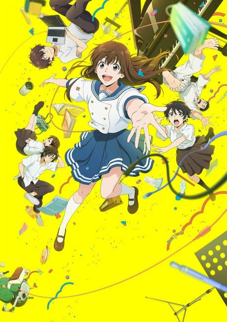
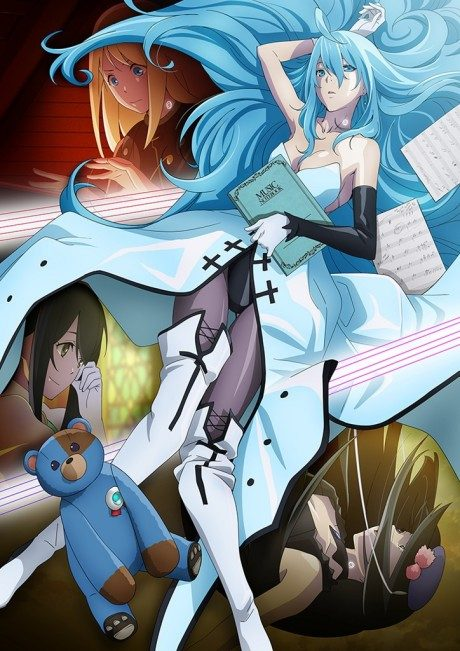
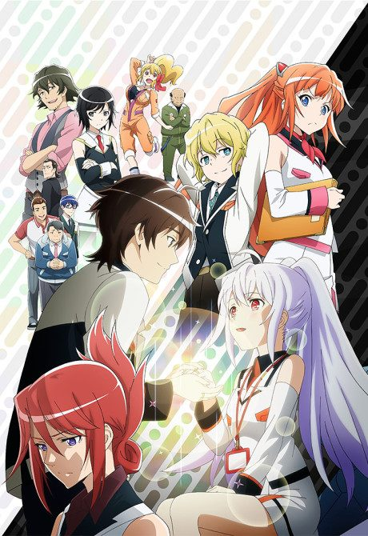
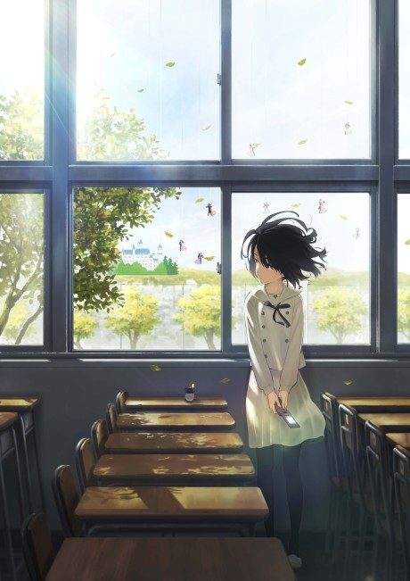
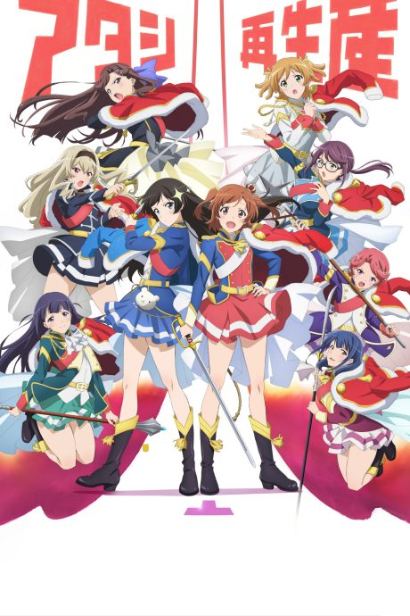

Anime2021 · Music, Sci-Fi
Sing a Bit of Harmony
アイの歌声を聴かせて
AniList7.5
Animeter—
Movie1 ep
MangaFilm
Is there a manga to continue?
StatusOriginal
An anime original, so there is no manga to pick up from.
Sources: AniList, MyAnimeList
More like Sing a Bit of Harmony



